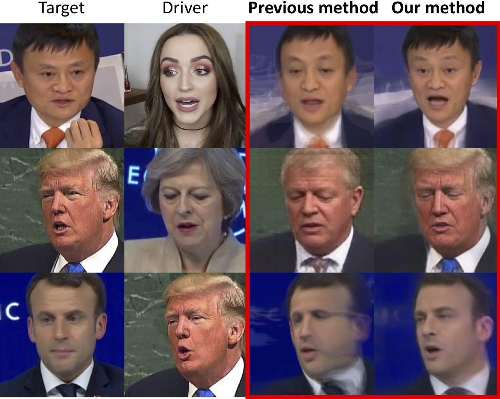

MarioNETte: Few-shot Face Reenactment
Preserving Identity of Unseen Targets

* Equal contributions, listed in alphabetical order. † Corresponding author.
When there is a mismatch between the target identity and the driver identity, face reenactment suffers severe degradation in the quality of the result, especially in a few-shot setting. The identity preservation problem, where the model loses the detailed information of the target leading to a defective output, is the most common failure mode. The problem has several potential sources such as the identity of the driver leaking due to the identity mismatch, or dealing with unseen large poses. To overcome such problems, we introduce components that address the mentioned problem: image attention block, target feature alignment, and landmark transformer. Through attending and warping the relevant features, the proposed architecture, called MarioNETte, produces high-quality reenactments of unseen identities in a few-shot setting. In addition, the landmark transformer dramatically alleviates the identity preservation problem by isolating the expression geometry through landmark disentanglement. Comprehensive experiments are performed to verify that the proposed framework can generate highly realistic faces, outperforming all other baselines, even under a significant mismatch of facial characteristics between the target and the driver.
@inproceedings{MarioNETte:AAAI2020,
author = {Sungjoo Ha and Martin Kersner and Beomsu Kim and Seokjun Seo and Dongyoung Kim},
title = {MarioNETte: Few-shot Face Reenactment Preserving Identity of Unseen Targets},
booktitle = {Proceedings of the AAAI Conference on Artificial Intelligence},
year = {2020}
}